Transmission Installation
Transmission InstallationSpecial Tools Required
^ Engine hanger/adapter VSB02C000015
^ 2006 Civic engine hanger VSB02C000025
^ Engine support hanger, A & Reds AAR-T-12566
^ Subframe adapter VSB02C000016
These special tools are available through the Honda Tool and Equipment Program 1-888-424-6857
NOTE: Use fender covers to avoid damaging painted surfaces.
1. Loosen the upper torque rod mounting bolt (A).
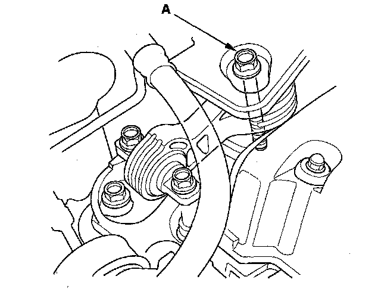
2. Make sure the two dowel pins (A) are installed in the clutch housing.
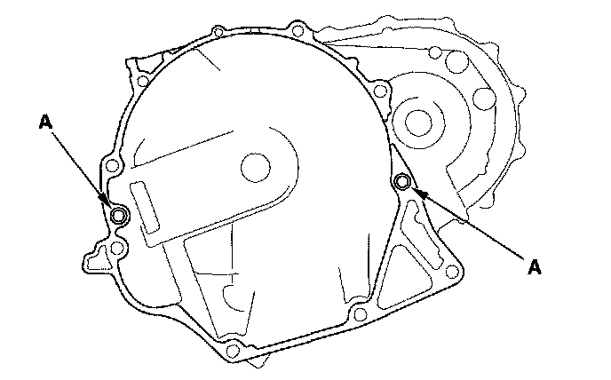
3. Install the release fork, the release bearing, and the boot.
4. Place the transmission on the transmission jack, and raise it to the engine level.
5. Install the transmission mounting bolts.
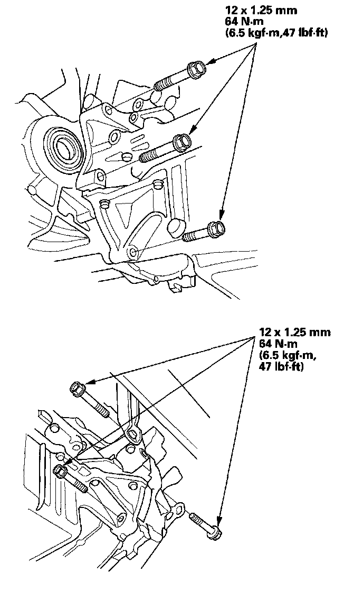
6. Install the clutch cover.
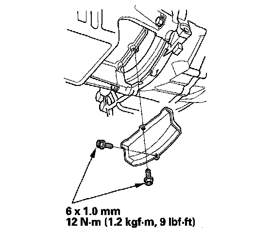
7. Install the intermediate shaft.
8. Install the driveshafts inboard joint.
9. Support the front subframe with the front subframe adapter and a jack.
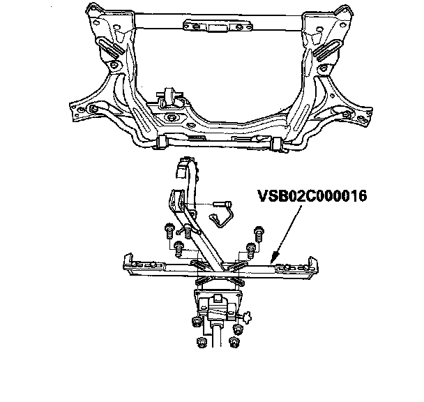
10. Install the front subframe (A). Loosely install the new subframe mounting bolts (B).
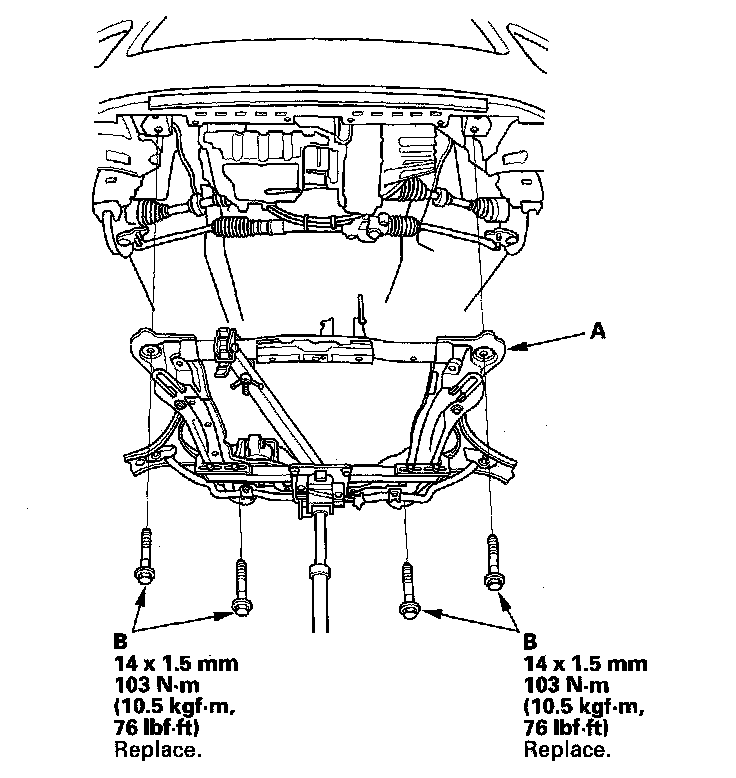
11. Align the front subframe reference marks (A) to the body (B), as noted during removal. Tighten the subframe mounting bolts to the specified torque.
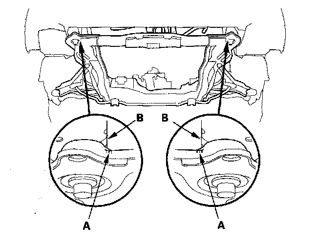
12. Install the rear engine mount bracket mounting bolt.
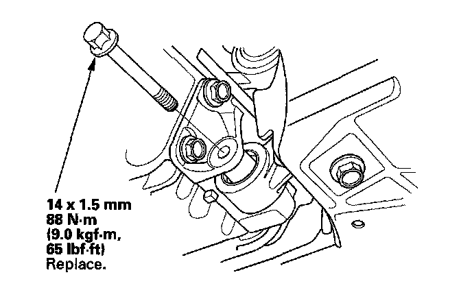
13. Install the front engine mount bracket (A) on the transmission and engine.
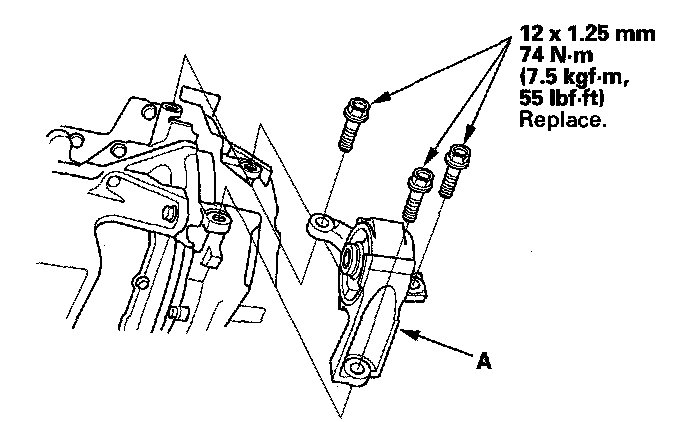
14. Install the front engine mount bracket mounting bolt (A) and nut (B). Then attach the lower radiator hose to the front engine mount bracket.
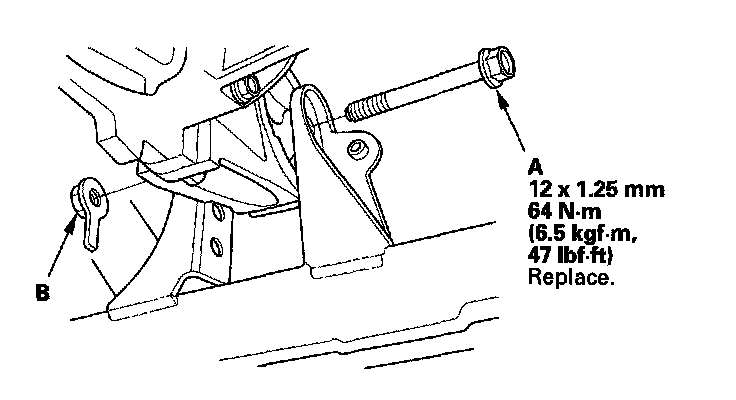
15. Install the middle subframe mounting bolts.
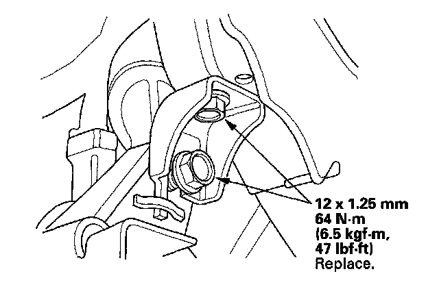
16. Install the steering gearbox stiffner plate (A) and harness clip (B).
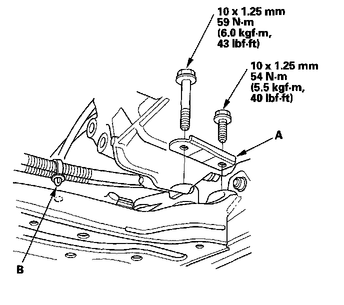
17. Install the stiffner plate (A) and mounting bracket (B). Connect the exhaust mounting rubber (C).
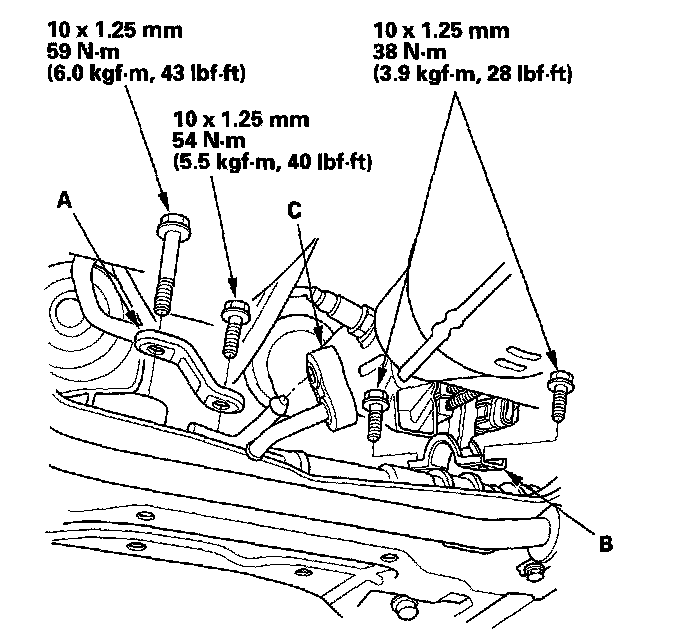
18. Connect the lower arm.
19. Lower the vehicle on the lift.
20. Install the transmission mount bracket, (A) and connect the ground cable (B).
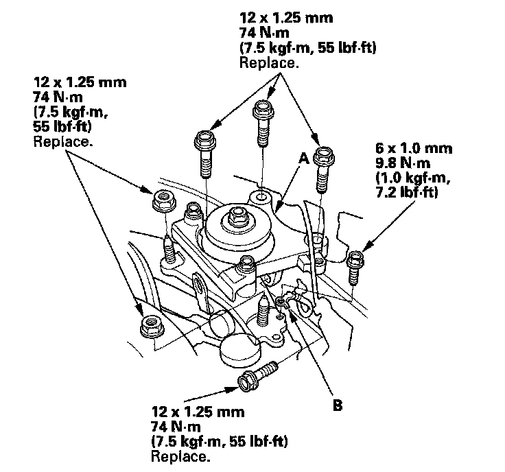
21. Raise the vehicle on the lift.
22. Loosen and retighten the lower torque rod mounting bolt,
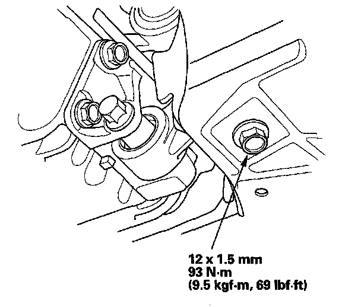
23. Refill the transmission with the recommended transmission fluid.
24. Install the splash shield.
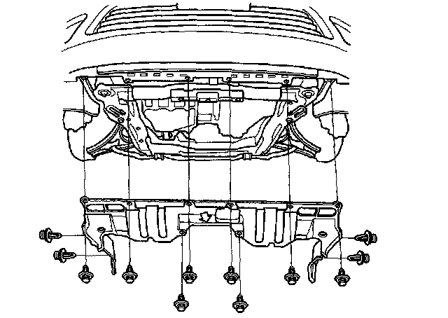
25. Lower the vehicle on the lift.
26. Remove the engine hanger and the hanger/adapter from the engine.
27. Tighten the upper torque rod mounting bolt.
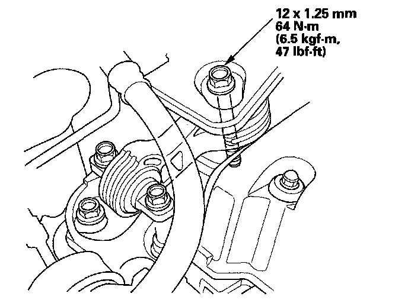
28. Install the engine control module (ECM) bracket (A), then install the clutch line clamp (B).
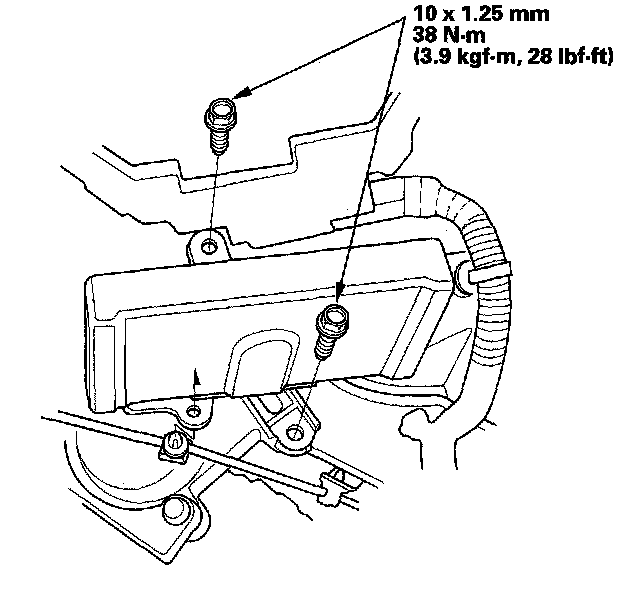
29. Install the under-food fuse/relay box (A) on the under-hood fuse/relay bracket.
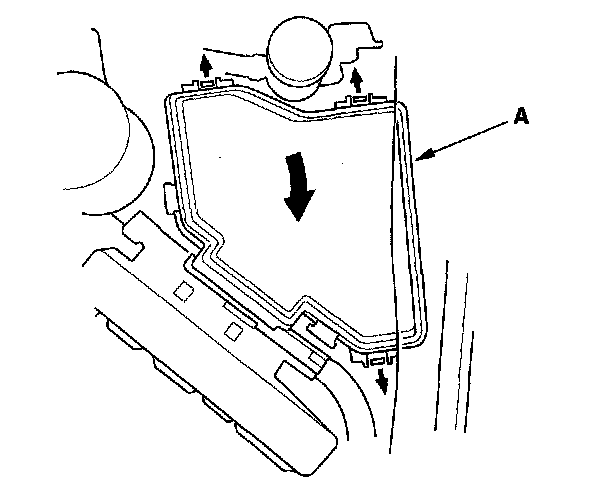
30. Install the two upper transmission mounting bolts.
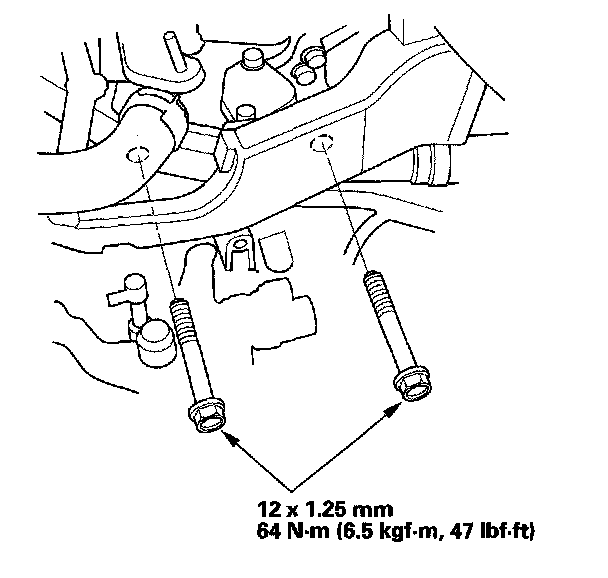
31. Install the engine harness cover (A).
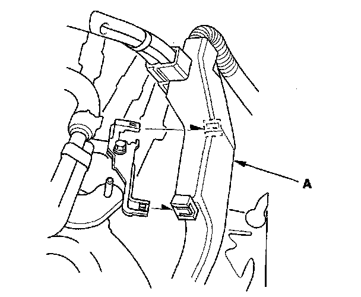
32. Install the air cleaner housing mounting bracket.
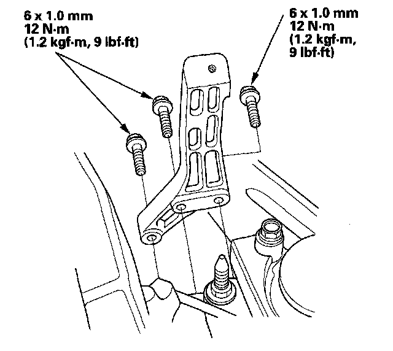
33. Install the harness clips (A) on the clutch cable bracket (B) and harness bracket (C).
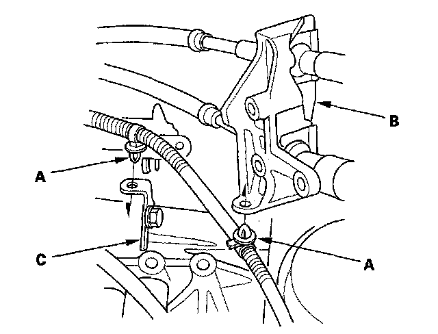
34. Apply a light coat of super high temp urea grease (P/N 08798-9002) to the cable ends (A) and the surface of the cable end rubber (B).
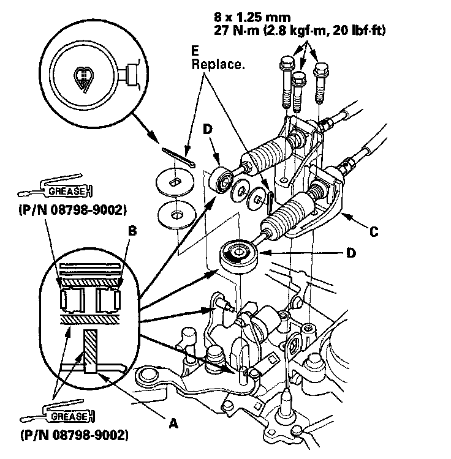
35. Install the cable bracket (C) and the cables (D), then install the new cotter pins (E).
36. Connect the back-up light switch connector (A), and the output shaft (countershaft) speed sensor connector (B), and the reverse lockout solenoid connector (C). Install the harness clips (D).
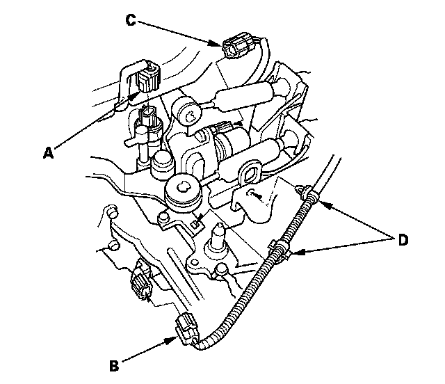
37. Apply super high temp urea grease (P/N 08798-9002) to the end of the slave cylinder rod. Install the slave cylinder (A) then install the clutch line bracket (B). Be careful not to bend the clutch line.
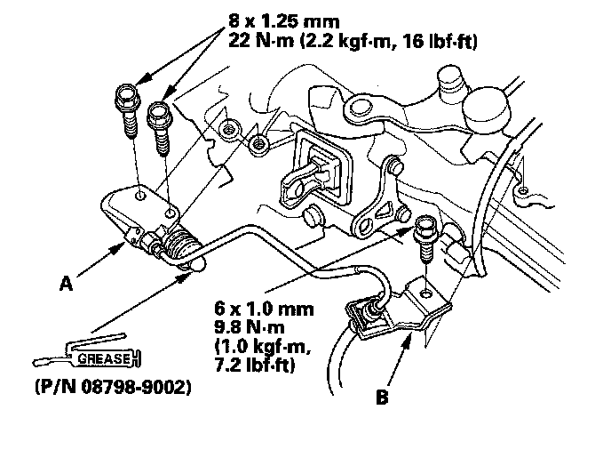
38. Install the battery base (A) with the coolant reservoir (B).
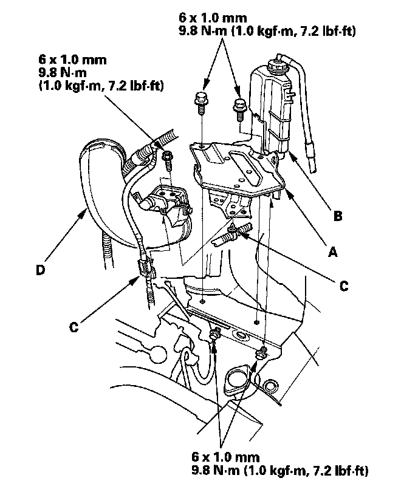
39. Install the harness clips (C) and the intake air duct (D).
40. Install the air cleaner assembly.
41. Install the battery. Clean the battery posts and cable terminals. Connect the positive cable to the battery first, then connect the negative cable, and apply multipurpose grease to prevent corrosion.
42. Install the under-cowl panel and cowl cover.
43. Test-drive the vehicle.
44. Check the change lever and the clutch operation.
45. Check the front wheel alignment.
46. Enter the anti-theft code for the audio unit or the navigation system, then enter the audio presets. Set the clock.
47. Do the power window control unit reset procedure.